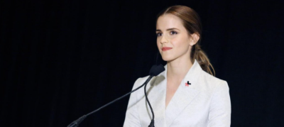

Best known for her iconic role as Hermione Granger in the Harry Potter films, Emma Watson is an actress, model, and activist.
On April 15th, 1990, Emma was born in Paris, France. Both her parents are British lawyers and her brother, Alex Watson, is a British actor and model. She also has two half-sisters, Lucy and Nina Watson, and a half-brother, Toby Watson.
After her parents divorced when Watson was five, she moved to Oxfordshire, England, with her mother and brother. There, she attended the Dragon School until June 2003, when she moved to Headington School, Oxford. She also attended Stagecoach Theatre Arts, a part-time theatre school, from the age of six. On the set of Harry Potter, Watson and the other young cast members were tutored for up to five hours a day. Harry Potter was an important part of Emma’s life. After her theatre tutors recommended her for the role of Hermione Granger, she auditioned several times. Her school, as a well-known institution, was in contact with set agents, and she was chosen as a candidate for the part. Emma has made great friendships with the cast of Harry Potter. The filming of Harry Potter started on February 18, 2009, and ended on June 12, 2010.
She continued her education at Brown University and as a visiting student at Worcester College, England, graduating from Brown with a bachelor’s degree in English Literature on May 25th, 2014.
Watson took a break from her studies, and between her acting and modelling careers, she found time to pursue another interest: ethical fashion. In 2009, Watson began working with the fashion line People Tree to create a collection that she could be proud of, both in terms of ethics and design. People Tree champions fair trade and organic fashion, and supplies customers with high quality, eco-friendly products. She was also chosen as the new face of Burberry the same year. She has also released a variety of self-designed garments for underprivileged children as part of a charity program. The proceeds from the clothings are donated to children’s charity UNICEF.
Watson is also an ambassador and advocate for One Young World, a non-profit organization that gives the youth a platform to have their voices heard about the global issues they care about. She joined the organization as a counsellor in 2016.
In 2014, Watson launched the “He For She” campaign to promote unity and gender equality. It aims to mobilize men in the fight for gender equality by combating gender stereotypes, such as girls cannot be “muscular” and boys should not cry as it makes them look “weak.” The campaign works to combat discriminatory behavior by building awareness of the importance of gender equality.
With the goal to share and amplify feminist ideas, she started a feminist Goodreads book club named “Our Shared Shelf” in January 2016, which now has over 37,000 members.
In a speech to the United Nations, she said, “Feminism is the belief that men and women should have equal rights and opportunities. It is the theory of the political, economic and social equality of the sexes.” Through her advocacy, she spotlights the importance of girls’ education and womens’ political participation. She has visited Bangladesh, Zambia, and many other countries to deliver her powerful speeches.
Not only a compelling social advocate, Watson has had an illustrious acting career. A few of the movies she acted in are Little Women, Beauty and the Beast, Harry Potter, and Regression.
Watson has won the Young Artist Award for Best Performance in a Feature Film - Leading Young Actress for “Harry Potter and the Philosopher's Stone.” She also won the ITV National Film Award for Best Female Performance, the San Diego Film Critics Society Award for Best Ensemble Performance and Best Supporting Actress, and the Teen Choice Awards in three categories—Choice Movie: Actress Sci-Fi/Fantasy, Choice Movie Liplock, and Choice Summer Movie: Female. She was named Hollywood’s highest-paid female star in February 2010.
Watson is an incredible actress and an outspoken activist promoting gender equality and access to education worldwide.
“Young girls are told you have to be the delicate princess. Hermione taught them that you can be the warrior.”
“Both men and women should feel free to be sensitive. Both men and women should feel free to be strong…it is time that we all perceive gender on a spectrum, not as two opposing sets of ideas.”
“Feeling beautiful has nothing to do with what you look like, I promise.”
- Emma Watson
I’ve loved Emma Watson ever since I watched Harry Potter. I researched her because she inspired me and motivated me with her quotes. I love the way she is, someone with such inspiration and motivation. She is a role model for me.
Biography. (2014, April 2). Emma Watson . Retrieved from Biography website: https://www.biography.com/actor/emma-watson
Expresslively. (2019, August 15). Emma Watson: How Does She Impact Society? Retrieved from https://expresslively.com/life/emma-watson/
tomorrowmakers. (2020, April 15). 5 Milestones Emma Watson achieved in women's right's work. Retrieved from Savy women: https://savvywomen.tomorrowmakers.com/wise/5-milestones-emma-watson-achieved-womens-rights-work-topical-article
UnWomen. (2014, September 20). Emma Watson: Gender equality is your issue too. Retrieved from UnWomen: https://www.unwomen.org/en/news/stories/2014/9/emma-watson-gender-equality-is-your-issue-too
Wikipedia. (2021, May 23). Emma Watson. Retrieved from Wikipedia Website: https://en.wikipedia.org/wiki/Emma_Watson
This article was published on 9/17/21